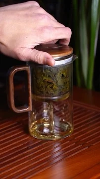
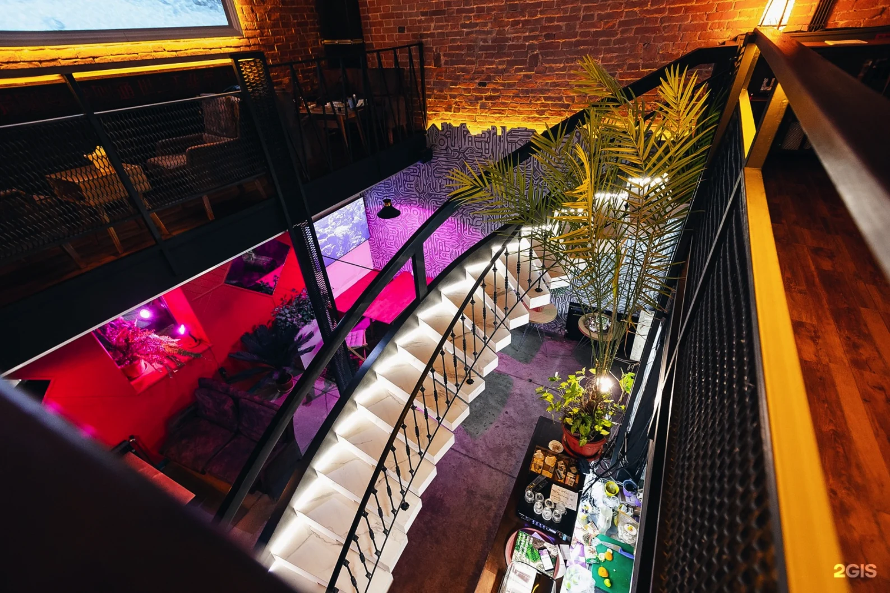

Чай, еда,разговоры.
Городское кафе в Астрахани с паназиатской халяль-кухней и китайским чаем.
Ульяновых, 1 · Ежедневно 10:00–02:00
Меню
Всё меню


Смотреть в 2ГИСОт чайника
до пиалы
Китайский чай раскрывается с каждым проливом. В нашей чайной карте есть пуэры, улуны, белые, зелёные и красные чаи.
Позвоните, чтобы узнать о стоимости и длительности чайной церемонии и уточнить, нужна ли запись.
О «Ча»
В «Ча» можно начать день с завтрака, зайти на обед или собраться вечером за паназиатскими блюдами и китайским чаем.
В зале — деревянные столы, бирюзовые диваны и тёплый свет. За одним столом здесь встречаются кухня разных стран Азии и традиция китайского чаепития.
Попробуйте пибимпап с копчёной курицей и зелёный Си Ху Лун Цзин с лёгкими травяными и ореховыми нотами.

Отзывы гостей
4,8из 5 в 2ГИСЧитать отзывы
«Очень атмосферное и уютное место! Были здесь с друзьями в пятницу.»
«Персонал просто замечательный!»

В гости или домой
Астрахань, улица Ульяновых, 1 · 1 этажЕжедневно 10:00–02:00
Бронь столика+7 (8512) 29-86-86
Доставка+7 (967) 829-53-53
В карточке «Ча» в 2ГИС нажмите «Показать вход».